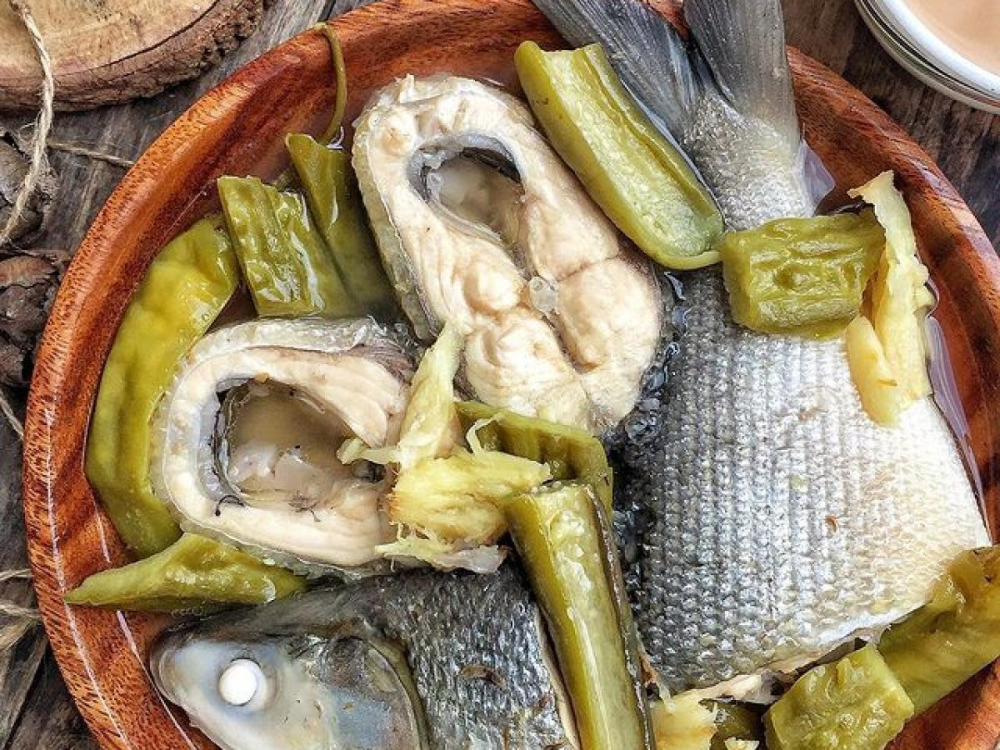

Paksiw na Bangus
Bangus Paksiw is a Filipino fish stew made of milkfish, vinegar, and spices.
It's a hearty, tasty, and budget-friendly meal that's perfect with steamed rice.
Ingredients
- 1 1/2 lbs. milkfish
- 3 thumbs crushed ginger
- 5 cloves garlic crushed
- 1/2 cup white vinegar
- 1 cup water
- 1 piece onion sliced
- 1 piece eggplant
- 5 pieces okra
- 2 pieces long green pepper
- 1 teaspoon whole peppercorn
How to Cook:
- Arrange ginger, garlic, okra, onion, long green pepper, peppercorn, and eggplant on the pot.
- Top with bangus slices.
- Pour water and vinegar. Apply heat and let boil. Cover and continue to cook
in low to medium heat for 15 minutes. - Add salt to taste.
- Transfer to a serving plate. Serve.